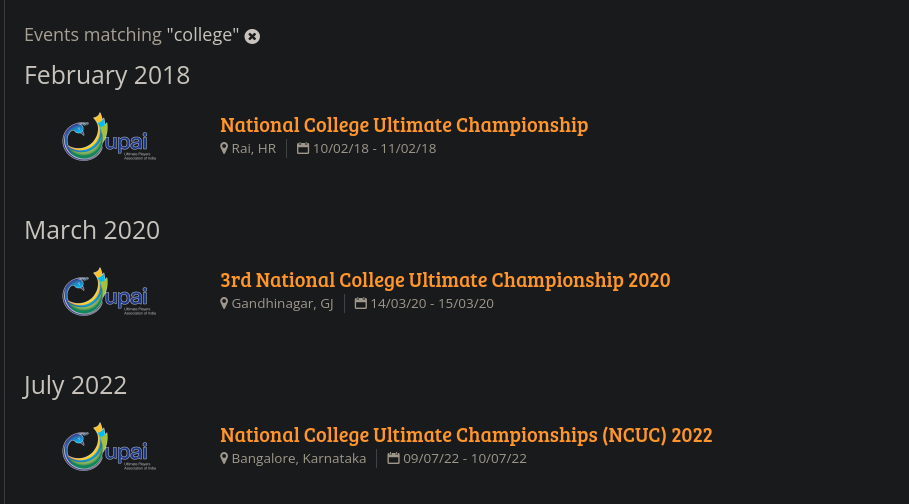

UltiArchive India
Table of Contents
Motivation
We're here to play Ultimate! Why should we care about a tech idea?
Let's see!
Data / Stats
- How many of you played your first NCUC? Did you have fun?
- Do you know how well or badly your college performed in the last edition?
- Do you have any way to compare this years' performance with previous ones?
- When was the first NCUC? Who participated?

Photos
- Who is your favorite Ultimate player?
- Have you seen any pictures of them in your first tournament?
- Wouldn't that be nice to have?
- Have you seen pictures of your college team's first NCUC?
Videos
- Has any of you watched any games live?
- How many of these have been on Instagram live?
- Have you been able to go back and watch any older games?
- Wouldn't it be nice to have an easier way to find them?!
What?
- Build an archive — Most of the content we consume today has been created in the last 3 days!
- Make it easily to search scores/stats/data
- Start with parsing existing score and spirit sheets
- Link it with photos, videos, etc.
- May be even make a better system to collect scores/spirit scores.
- Potentially useful for research on the sport, auctions data, etc.
Inspiration
Windmill scores page

WCBU 2017 scores page

Ultiphotos

Who am I?
- Ultimate Frisbee Player
- Free & Open Source Software Enthusiast
- Google Summer of Code Mentor
- Director of Technology (aka System Admin xD)
- Contact
- punchagan@muse-amuse.in
- @punchagan on Twitter
- (or DM tiks_ultimate on Insta)
Previous work
Spirit scoring sheet
Demo

- Tech Stack
- Python, Pandas, Google Sheets, Heroku
- Code
- github.com/india-ultimate/sotg-calculator
Future work?
- Integrate with tournament schedule
- Keep track of different spreadsheets?
- Clean-up app code and make more robust
- Improve error messages
RSVP App
More like a Team Management App …
WhatsApp is a blackhole. Period.
Features

- Tech Stack
- Python, Heroku, Google OAuth, JS, …
- Code
- github.com/thatte-idli-kaal-soup/rsvpapp
Simpler RSVPs
- Multiple call-ins without noise
- Track attendance
- WhatsApp group is still usable
Player information management
- Easy to get list of players, info, etc.
- Create Splitwise groups, and manage payments
Organize Team Media
- Google Drive with shared photos
- Automatically access control
- Shared Google calendar
Future work?
- Restrict events to some users
- Implement web-push notifications
- Try for other teams?
- Make deployment easier?
- Provide as a service?
- Allow anonymous call-ins
- …